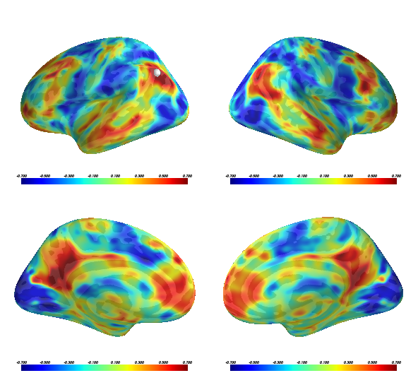

PySurfer provides a function to sample a volume-encoded file to the surface for improved visualization. At the moment, this uses Freesurfer’s mri_vol2surf routine.
Python source code: plot_from_volume.py
print __doc__
from surfer import Brain, io
"""Bring up the visualization"""
brain = Brain("fsaverage", "lh", "inflated",
config_opts=dict(background="white"))
"""Project the volume file and return as an array"""
mri_file = "example_data/resting_corr.nii.gz"
reg_file = "example_data/register.dat"
surf_data = io.project_volume_data(mri_file, "lh", reg_file)
"""
You can pass this array to the add_overlay method for
a typical activation overlay (with thresholding, etc.)
"""
brain.add_overlay(surf_data, min=.3, max=.7, name="ang_corr")
"""
You can also pass it to add_data for more control
over the visualzation. Here we'll plot the whole
range of correlations
"""
brain.overlays["ang_corr"].remove()
brain.add_data(surf_data, -.7, .7, colormap="jet", alpha=.7)
"""
This overlay represents resting-state correlations with a
seed in left angular gyrus. Let's plot that seed.
"""
seed_coords = (-45, -67, 36)
brain.add_foci(seed_coords, map_surface="white")